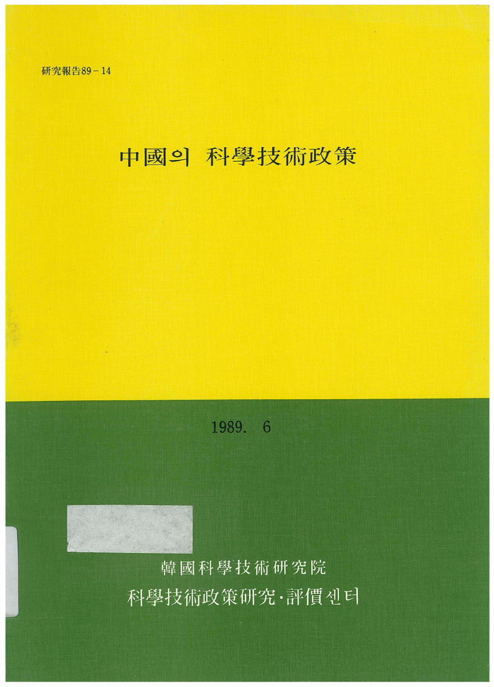
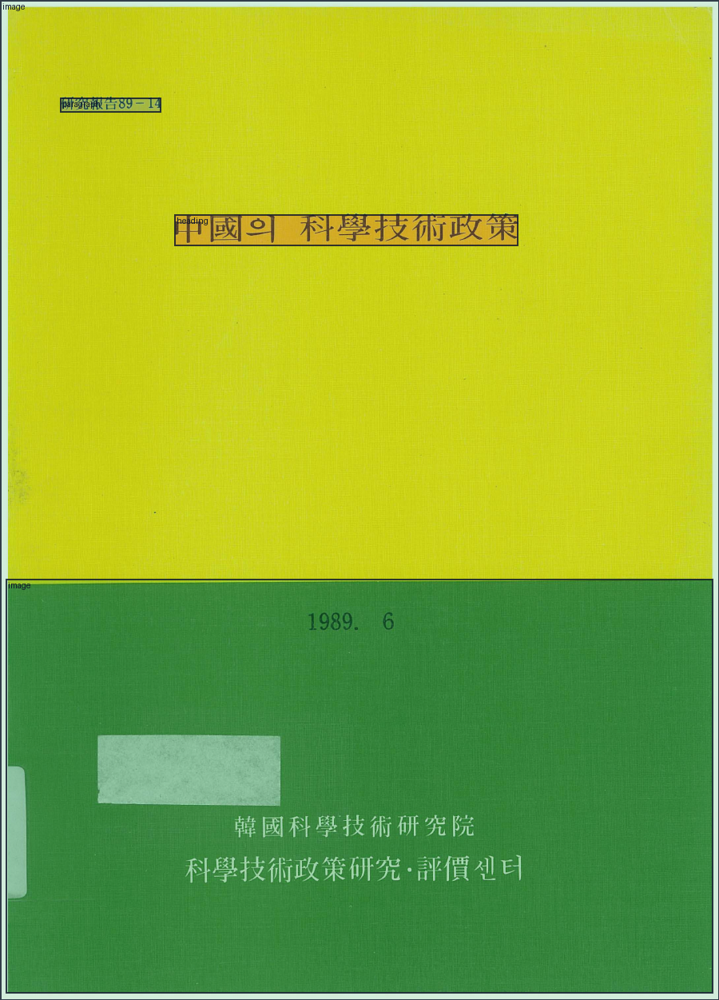
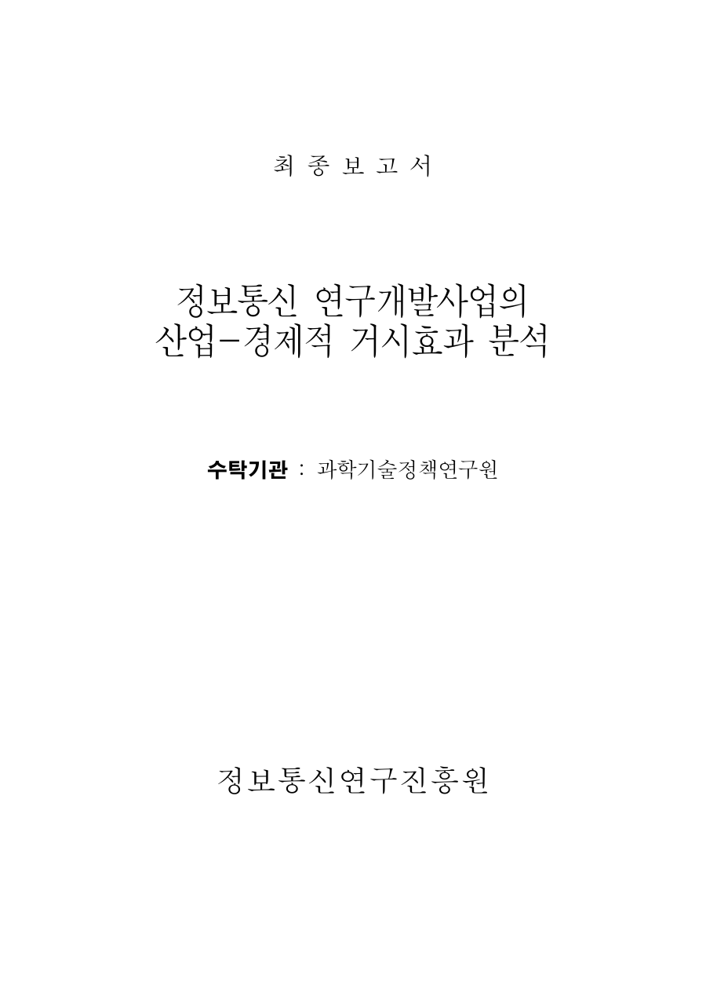
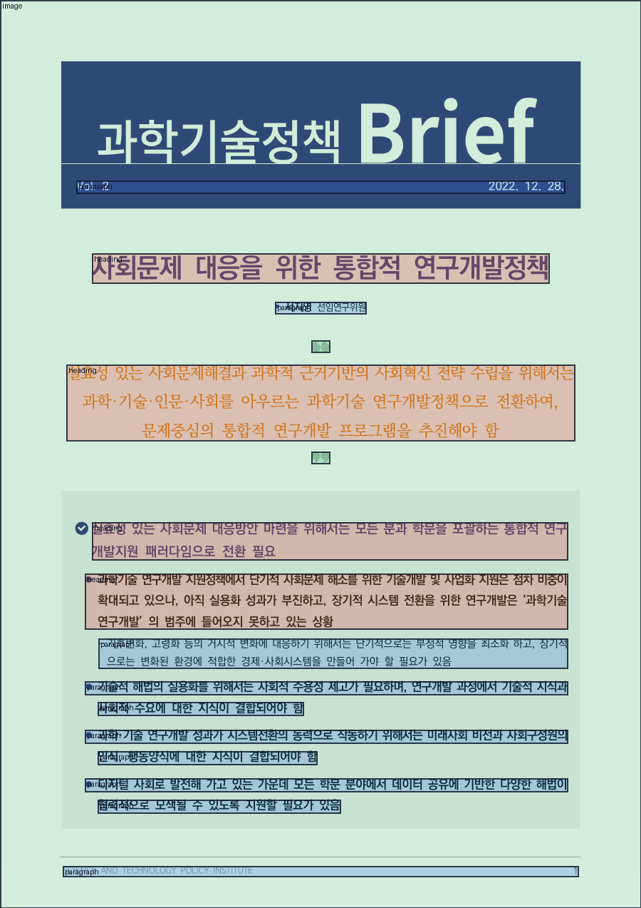
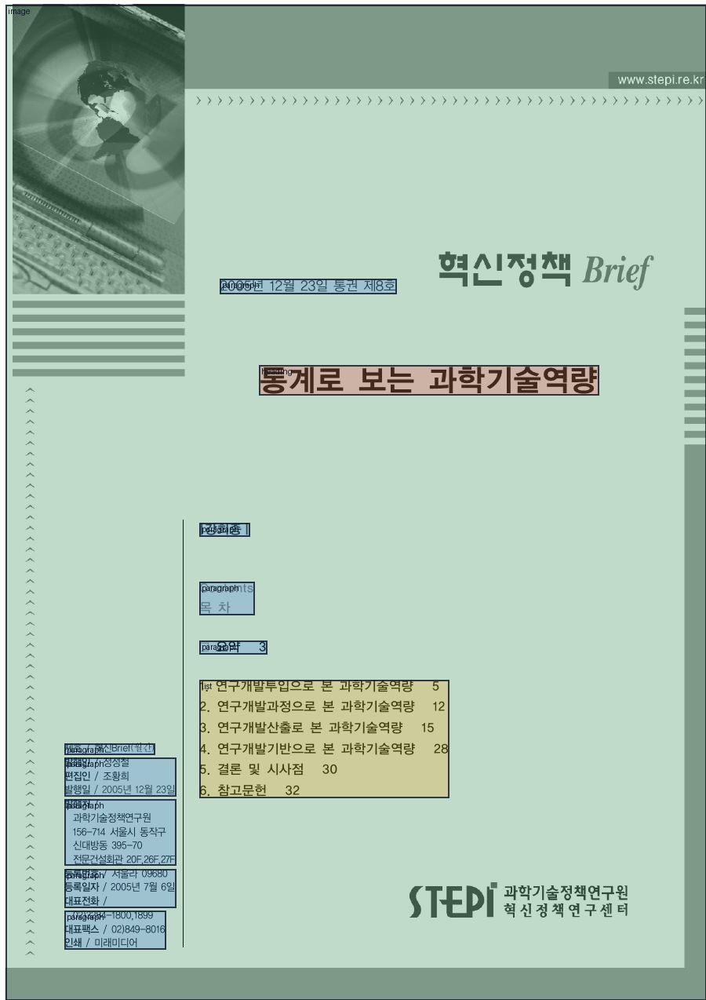
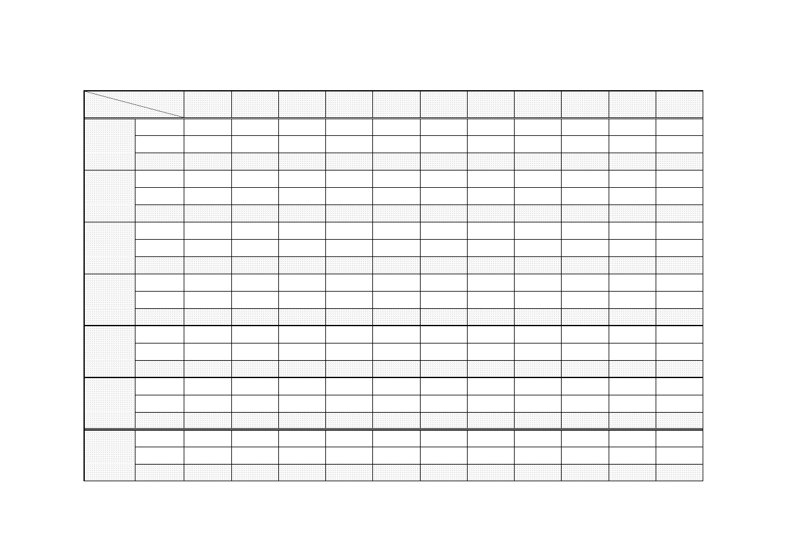
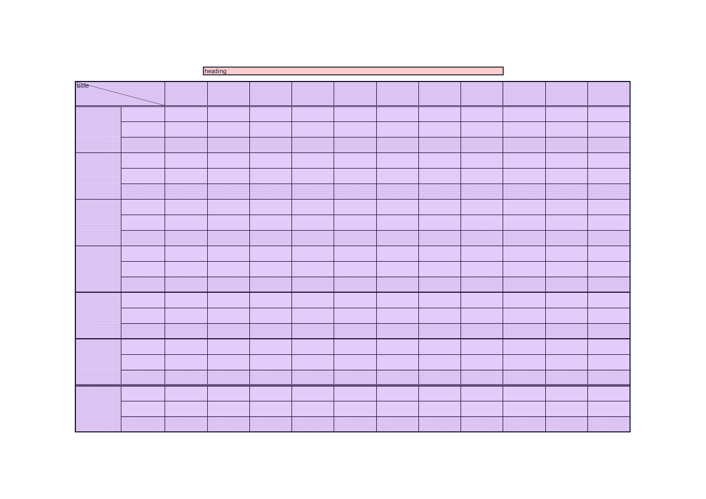

문서 변환 3단 예시
대표 문서 6개의 첫 페이지를 같은 구성으로 제시합니다. 원본 페이지, 감지·레이아웃 결과, Markdown 변환 결과를 나란히 확인할 수 있습니다.
문서유형 대표
1. 정책연구 · 1989 · 첫 페이지


3. Markdown 변환 결과
 wf究報告 89-14 # 中國의 科學技術政策 
문서유형 대표
5. 수탁연구 · 1999 · 첫 페이지


3. Markdown 변환 결과
최 종 보 고 서 # 정보통신 연구개발사업의 산업-경제적 거시효과 분석 수탁기관 : 과학기술정책연구원 ## 정보통신연구진흥원
문서유형 대표
8. 과학기술정책 Brief · 2022 · 첫 페이지


3. Markdown 변환 결과
 Vol. 2 2022. 12. 28. # 사회문제 대응을 위한 통합적 연구개발정책 • 서지영 선임연구위원  ## 실효성 있는 사회문제해결과 과학적 근거기반의 사회혁신 전략 수립을 위해서는 과학·기술·인문·사회를 아우르는 과학기술 연구개발정책으로 전환하여, 문제중심의 통합적 연구개발 프로그램을 추진해야 함  ### 실효성 있는 사회문제 대응방안 마련을 위해서는 모든 분과 학문을 포괄하는 통합적 연구 개발지원 패러다임으로 전환 필요 #### l 과학기술 연구개발 지원정책에서 단기적 사회문제 해소를 위한 기술개발 및 사업화 지원은 점차 비중이 확대되고 있으나, 아직 실용화 성과가 부진하고, 장기적 시스템 전환을 위한 연구개발은 ‘과학기술 연구개발’ 의 범주에 들어오지 못하고 있는 상황 - 기후변화, 고령화 등의 거시적 변화에 대응하기 위해서는 단기적으로는 부정적 영향을 최소화 하고, 장기적 으로는 변화된 환경에 적합한 경제·사회시스템을 만들어 가야 할 필요가 있음 l 기술적 해법의 실용화를 위해서는 사회적 수용성 제고가 필요하며, 연구개발 과정에서 기술적 지식과 사회적 수요에 대한 지식이 결합되어야 함 l 과학·기술 연구개발 성과가 시스템전환의 동력으로 작동하기 위해서는 미래사회 비전과 사회구성원의 인식, 행동양식에 대한 지식이 결합되어야 함 l 디지털 사회로 발전해 가고 있는 가운데 모든 학문 분야에서 데이터 공유에 기반한 다양한 해법이 협력적으로 모색될 수 있도록 지원할 필요가 있음 SCIENCE AND TECHNOLOGY POLICY INSTITUTE 1
문서유형 대표
13. 동향과 이슈 · 2005 · 첫 페이지


3. Markdown 변환 결과
 2005년 12월 23일 통권 제8호 # 통계로 보는 과학기술역량 |강희종 | Contents 목 차 □ 요약 3 - 1. 연구개발투입으로 본 과학기술역량 5 - 2. 연구개발과정으로 본 과학기술역량 12 - 3. 연구개발산출로 본 과학기술역량 15 - 4. 연구개발기반으로 본 과학기술역량 28 - 5. 결론 및 시사점 30 - 6. 참고문헌 32 제호 / 혁신Brief(월간) 발행인 / 정성철 편집인 / 조황희 발행일 / 2005년 12월 23일 발행처 / 과학기술정책연구원 156-714 서울시 동작구 신대방동 395-70 전문건설회관 20F,26F,27F 등록번호 / 서울라 09680 등록일자 / 2005년 7월 6일 대표전화 / 02)3284-1800,1899 대표팩스 / 02)849-8016 인쇄 / 미래미디어
문서유형 대표
15. Working Paper · 2008 · 첫 페이지


3. Markdown 변환 결과
 ## STEPI WORKING PAPER SERIES WP 2008-01 / 2008-05-06 # 정책 조정의 새로운 접근 : 정책 통합 ### 성지은1․송위진2 |STEPI Working Paper는 진행 중인 연구의 중간 성과물로서 완성된 연구결과가 아니며, 인용 및 게재 시 Working Paper임을 밝혀야 합니다. 또 본 연구에서 제시된 주장은 STEPI의 공식 입장이 아닌 연구자의 의견입니다.| |---| - 1 과학기술정책연구원 혁신정책연구센터 부연구위원 jeseong@stepi.re.kr - 2 과학기술정책연구원 혁신정책연구센터 연구위원 songwc@stepi.re.kr
내부압축 PDF 예시
5. 수탁연구 · 2001 · 첫 페이지


3. Markdown 변환 결과
# <부록 도표 A-1> 산업기술진흥협회에 등록된 기업부설연구소 전체 설립 현황 |년 도 업 종| |1991|1992|1993|1994|1995|1996|1997|1998| | | | |---|---|---|---|---|---|---|---|---|---|---|---|---| |기계금속|대 기 업|145|157|166|178|181|167|169|175| | | | | |중소기업|243|277|329|379|452|449|561|708| | | | | |소계|388|434|495|557|633|616|730|883| | | | |전기전자|대 기 업|127|136|145|153|163|203|226|232| | | | | |중소기업|277|386|479|601|713|881|1,095|1,514| | | | | |소계|404|522|624|754|876|1,084|1,321|1,746| | | | |화학|대 기 업|123|126|136|162|164|191|194|194| | | | | |중소기업|135|170|208|241|284|336|378|457| | | | | |소계|258|296|344|403|448|527|572|651| | | | |식품|대 기 업|41|42|43|48|51|50|49|52| | | | | |중소기업|12|15|17|17|19|20|22|25| | | | | |소계|53|57|60|65|70|70|71|77| | | | |섬유|대 기 업|18|20|23|26|30|32|30|29| | | | | |중소기업|10|11|12|13|15|15|15|17| | | | | |소계|28|31|35|39|45|47|45|46| | | | |기타|대 기 업|42|51|64|81|96|105|114|118| | | | | |중소기업|28|44|68|81|102|161|207|239| | | | | |소계|70|95|132|162|198|266|321|357| | | | |총계|대 기 업|496|532|577|648|685|748|782|800| | | | | |중소기업|705|903|1,113|1,332|1,585|1,862|2,278|2,960| | | | | |소계|1,201|1,435|1,690|1,980|2,270|2,610|3,060|3,760| | | |